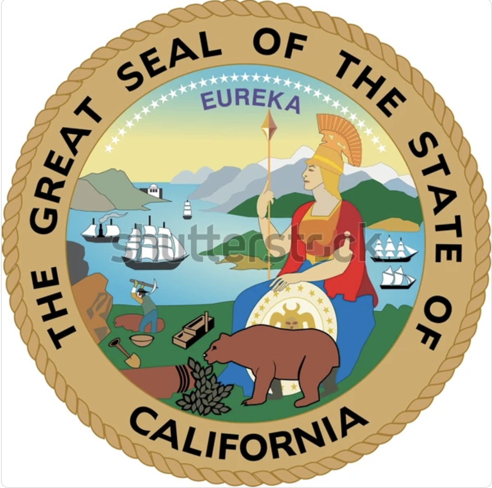

Research Data Analyst
Jun 2023 - Present
📊 Directed a thorough Excel-based data clean-up for university datasets, boosting decision-making accuracy by 25%.
📊 Designed and implemented surveys to gather student satisfaction data, leveraging Qualtrics for insights into service quality and decision factors at Sac State.
📊 Utilized Tableau and Power BI for advanced data visualization & interactive dashboards, enhancing strategic initiatives and presenting findings on CSU campus improvements.
📊 Conducted research on CSU campuses, writing detailed reports on website enhancements and institutional improvements, providing actionable recommendations for betterment.
- 
Data Analyst Intern
Aug 2023 - Dec 2023 📊 Organized autonomous vehicles dataset with 250+ SQL entries, enhancing database management efficiency.
📊 Developed Tableau dashboards, effectively presenting insights of vehicles crash patterns to stakeholders.
📊 Utilized EDA to examine vehicle's crashes, resulting in 30% decrease in similar incidents over past six months.
📊 Managed extensive datasets with Spark, including data transformation to ensure efficient utilization of data sources.
Supplemental Instructor of Computer Science
May 2022 - Dec 2022
📊 Used data visualization tools to create charts and graphs to help identify trends and patterns in student performance data.
📊 Analyzed data related to student performance and engagement to identify areas where additional support may be needed.
📊 Planned and taught(Programming Concepts) two 60-minute SI classes for Java each week based on the Kansas City SI model.
📊 Maintaining instructional materials online and helping students learn Java efficiently by practicing problems in every Lecture Session.
📊 Creating challenging worksheets to help students in practicing Java.
Computer Science Tutor
Jul 2022 - March 2023
📊 Tutoring all computer science courses listed under Sac State's Lower Division CSC Catalogue.
📊 Helping students with their questions related to Java, C, SQL, Data Structures & Algorithms, and reaching their academic goals.
📊 Digitally marketing tutoring services to help the maximum Computer Science population.
Marketing and Promotions Lead
Dec 2022 - Feb 2023 📊 Assessed and analyzed the effectiveness of promotional efforts using data analysis to continually improve outreach strategies.
📊 Created promotional materials (flyers, posters, presentations) to advertise PARC's services and events
📊 Utilized digital marketing to reach a wider audience and analyzed data to optimize outreach strategies.
📊 Collaborated with other departments and organizations on campus to increase visibility and engagement for PARC
Student Success Ambassador
Jun 2021 - May 2023
📊 Conducted data analysis on student demographics of over 24,000 undergraduate students to identify engagement strategies.
📊 Developed predictive models to inform planning and resource allocation decisions, ultimately supporting student success.
📊 Utilized surveys and focus groups to gather data on student needs and preferences, informing personalized support services.
📊 Analyzed large data sets related to student performance to identify patterns and trends that informed academic advising strategies.